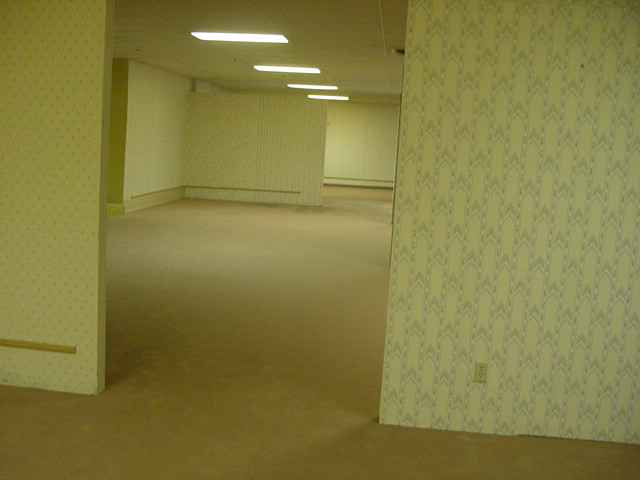

後室
The Backrooms (2022) · 導演：凱恩·帕森斯 (Kane Parsons)
「若你一不小心在現實世界中穿牆卡出界（No-clip），迎面而來的將是六億平方英里無休止的潮濕黃色地毯與日光燈嗡嗡聲。」
★ 多維度深度評析
綜合評析指數：9.4 / 10極力推薦觀看群體
- 沉迷於「閾限空間 (Liminal Space)」、SCP 基金會與網路怪談的愛好者
- 厭倦了突發驚嚇 (Jump Scare)，偏好心理細思極恐氛圍的恐怖片迷
- 對 90 年代復古磁帶手持攝影美學深感興趣的創作愛好者
可能需要心理準備
- 全片手持走動與劇烈奔跑，3D 暈眩體質者請注意視角
- 幾無傳統角色對話，主打純空間探索與聽覺壓迫體驗
無雷簡介與推薦指南
源自 4chan 著名都市傳說與「閾限空間」（Liminal Space）迷因，《後室》（The Backrooms）在年僅 16 歲的天才創作者 Kane Parsons 手中被昇華為令人背脊發涼的偽紀錄片（Found Footage）視聽奇觀。故事講述一名 1990 年代的攝影愛好者在拍攝短片時失足穿透地面，掉進了現實邊界之外的未知空間。
那裡沒有出口，只有整齊劃一的泛黃壁紙、受潮發霉的陳舊地毯，以及天花板上發出刺耳低頻蜂鳴的日光燈管。本片不依賴廉價的突發驚嚇（Jump Scare），而是透過無止境的空間疏離感與孤立感，將人類對未知與無垠維度的原始恐懼無限放大。
⚠️
深度劇情剖析與結局討論（含重大劇透）
本區塊包含空間設定、實體追逐與 Async 實驗室背景深度解析
▼
深度劇情剖析與結局討論（含重大劇透）
本區塊包含空間設定、實體追逐與 Async 實驗室背景深度解析
#1 閾限恐懼心理學：熟悉卻無生機的死寂
「後室」之所以引發全球狂熱，在於其建構的「過渡性空間」（Transitional Space）。辦公室、走廊與轉角原本是人類日常聚集之處，但當它被抽離了所有家具、窗戶與人類生命跡象時，原本的安全感瞬間異化為深層的壓迫感。走得越遠，越懷疑自己是否早已被物理世界徹底遺忘。
#2 骨架實體的追獵：非自然維度的產物
後半段出現的黑色線狀扭曲實體（The Bacteria Entity），伴隨著刺耳的金屬哀鳴在長廊深處瘋狂奔馳。它不是傳統意義上的鬼怪，更像是後室空間本身的免疫系統，無情抹殺任何闖入這個非歐幾里得幾何維度的異物。
#3 墜落與虛無：無法被尋獲的磁帶
結局中攝影機在劇烈追逐後從天花板墜落，重回現實世界的草地上，暗示主角肉身永遠被困在無邊的黃色迷宮中，唯有攝影機與磁帶留存。A24 隨後簽下電影改編版權，也證明了類比恐怖已成為新世代恐怖電影不可忽視的全新語言。